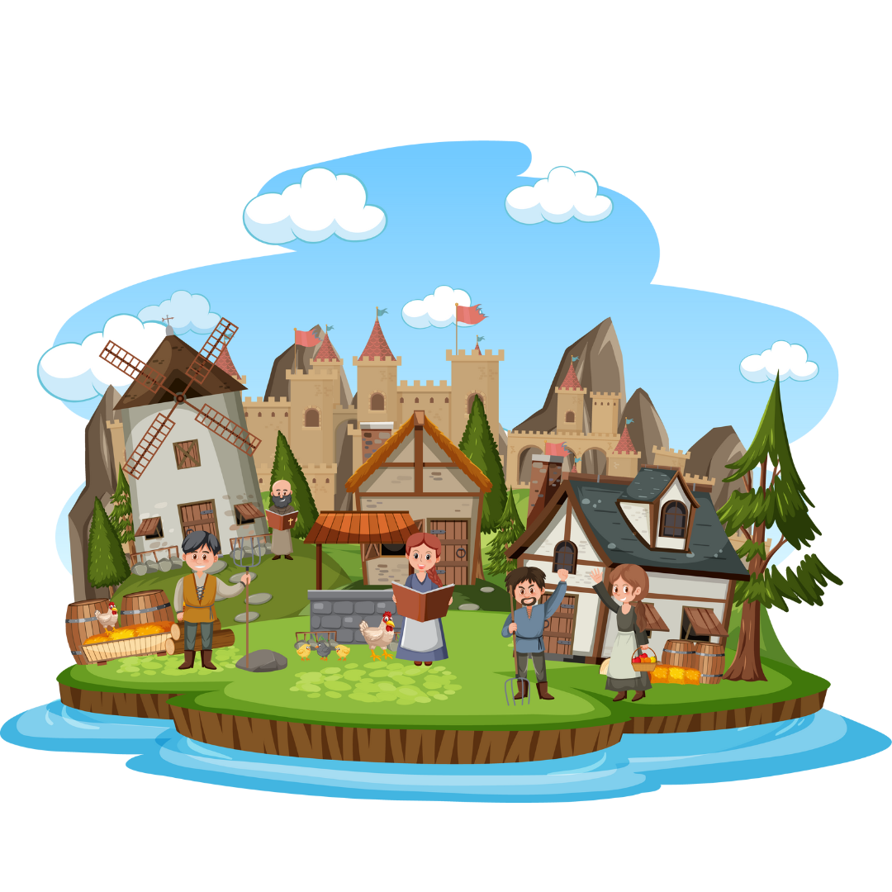
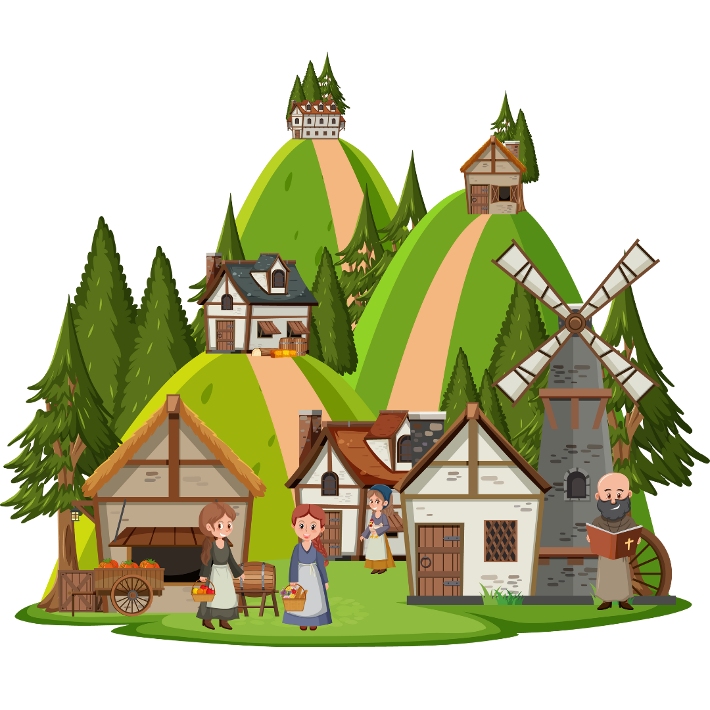
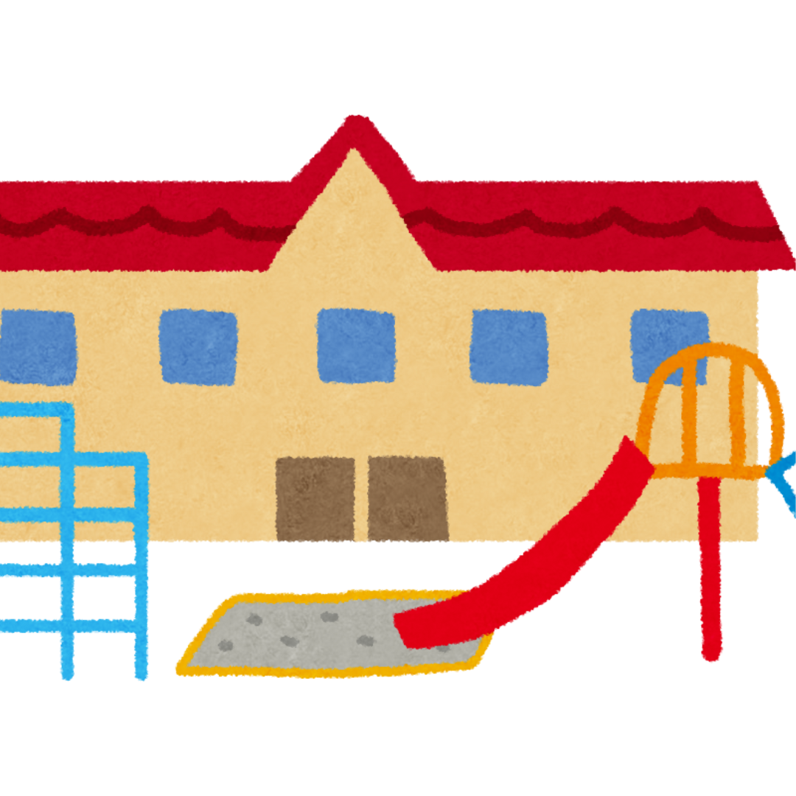
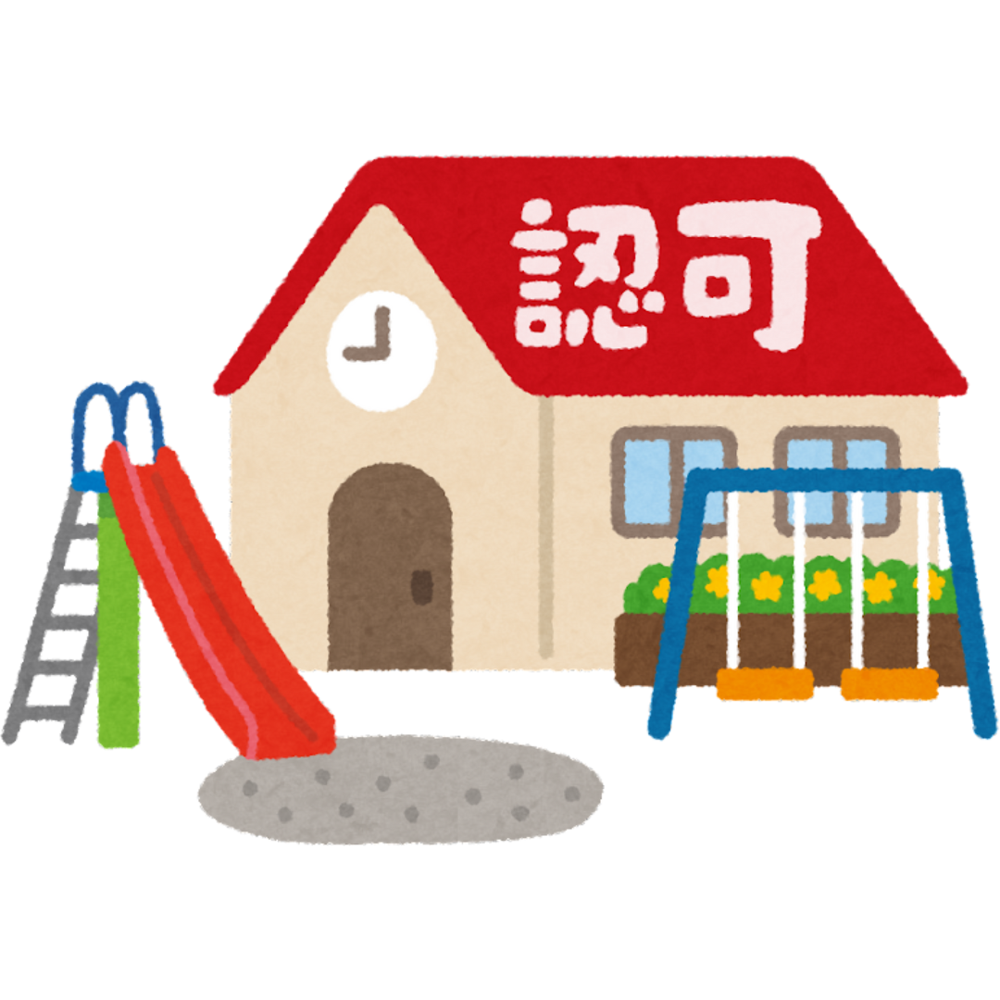
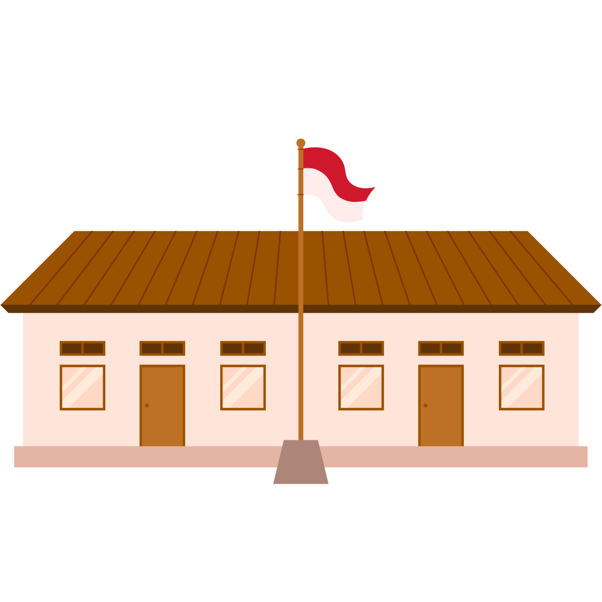
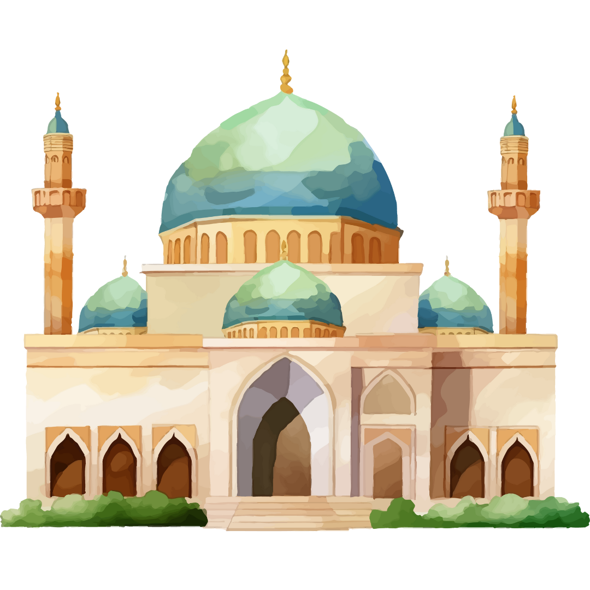
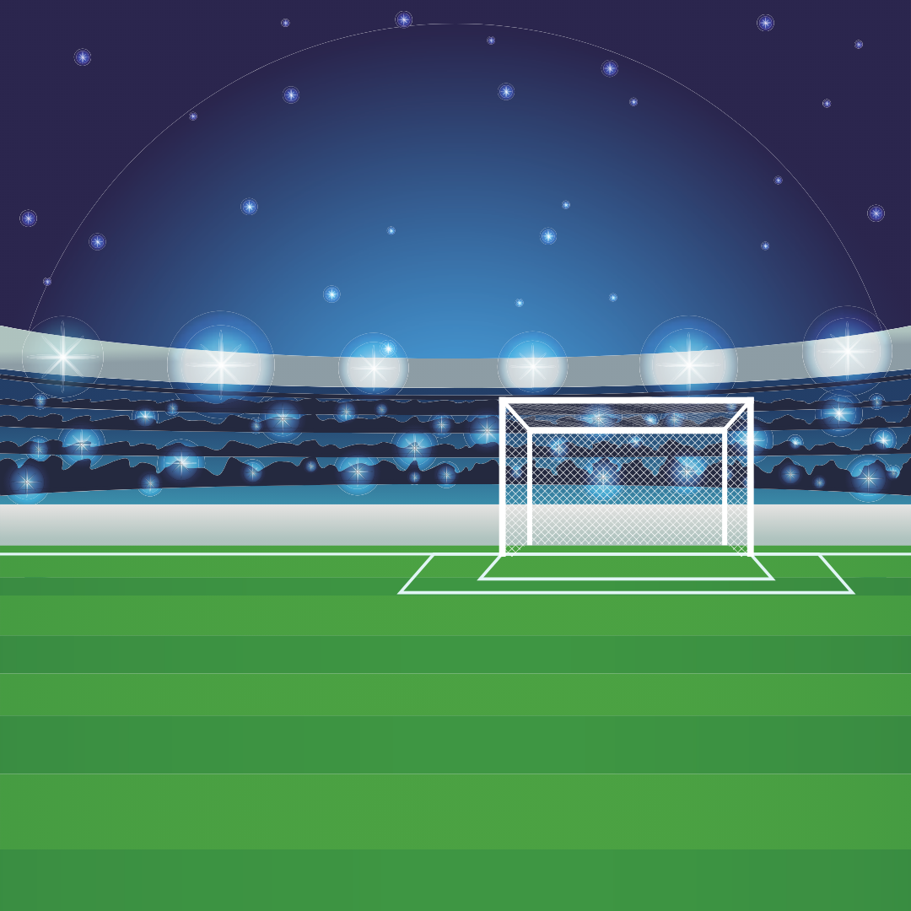
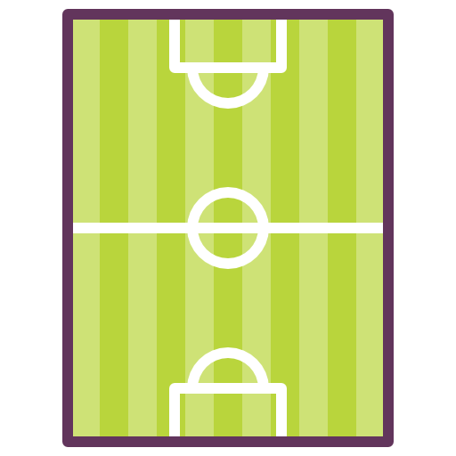
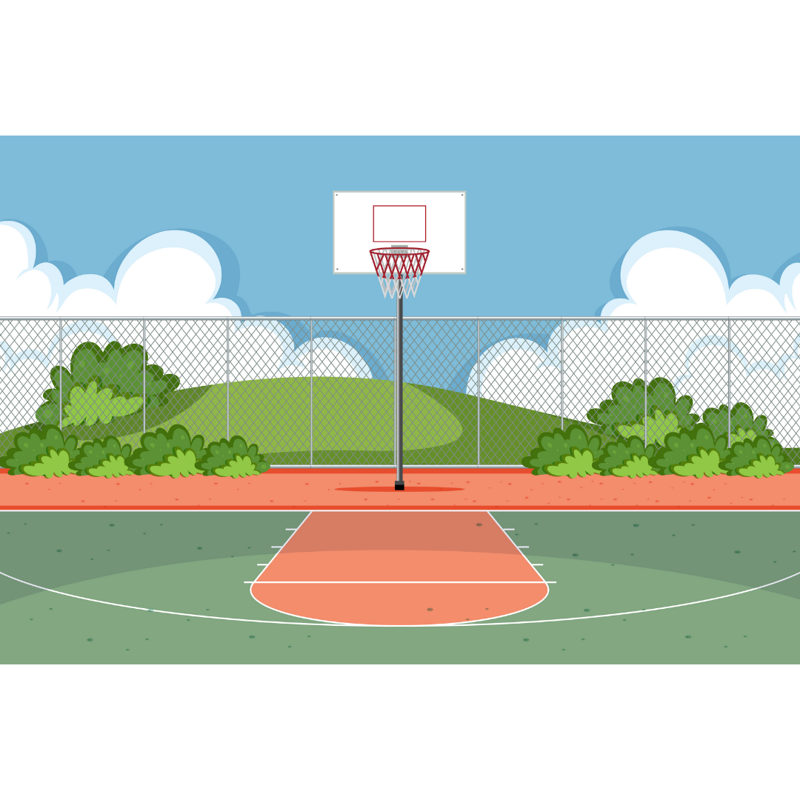

Infografis
Data Umum Kelurahan Bukit Harapan
Jumlah Penduduk
TOTAL PENDUDUK
12.628 Jiwa
KEPALA KELUARGA
3.814 KK

JUMLAH RT
27 RT

JUMLAH RW
9 RW
Statistik Penduduk Kelurahan Bukit Harapan
Data Semester I Tahun 2025
Distribusi Pekerjaan Utama
Kelurahan Bukit Harapan - Tahun 2025
Distribusi Pendidikan Terakhir
Kelurahan Bukit Harapan - Tahun 2025
Sarana dan Prasarana
KANTOR KELURAHAN
1 UNIT
Sarana Kesehatan
PUSKESMAS
1 UNIT
PUUSKESMAS PEMBANTU
1 UNIT
POSKESKEL
1 UNIT
POSYANDU
10 UNIT
Prasarana Pendidikan

TK SWASTA
6

TK NEGERI
2

SD NEGERI
3
SMP NEGERI
2
SMA NEGERI
1
perguruan tinggi
1
Prasarana Ibadah

MASJID
20 UNIT
GEREJA
1 UNIT
Prasarana Olahraga

SEPAK BOLA
2 UNIT

FUTSAL
1 UNIT
TENNIS
2 UNIT

BASKET
2 UNIT